도시·개발 · 3D·VR
인천 제물포 르네상스 광역도 및 조감도 결과물
MAKE GROUP · Architectural Visualization
프로젝트 개요
인천 제물포 르네상스 개발 관련 조감도 및 작업과정에 대한 일체 결과물입니다.
최종 결과물
 1. 인천 제물포 르네상스 개발 인천역 부분 조감도
1. 인천 제물포 르네상스 개발 인천역 부분 조감도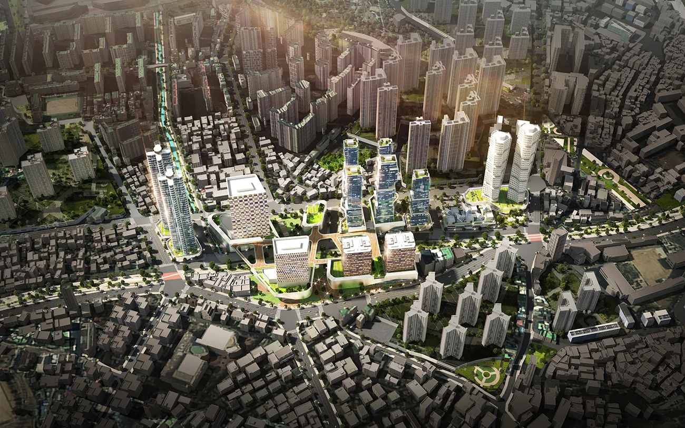
2. 인천 제물포 르네상스 개발 동인천역 조감도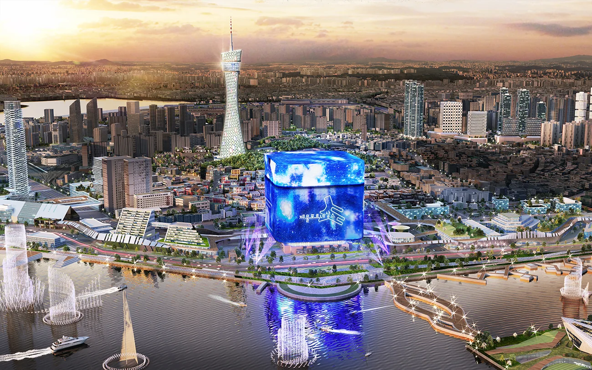
3. 인천 제물포 르네상스 개발 인천 복합문화 콤플렉스 부분 조감도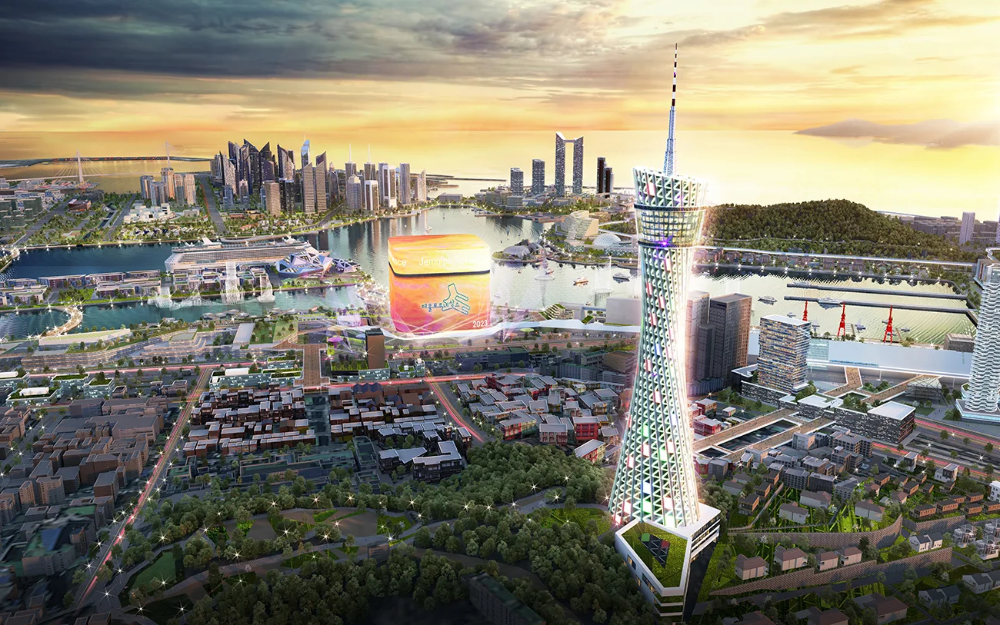
4. 인천 제물포 르네상스 개발 인천 타워 부분 조감도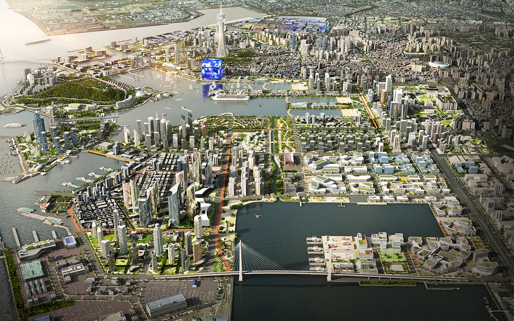
5. 인천 제물포 르네상스 개발 인천 벤처 하버파크 부분 조감도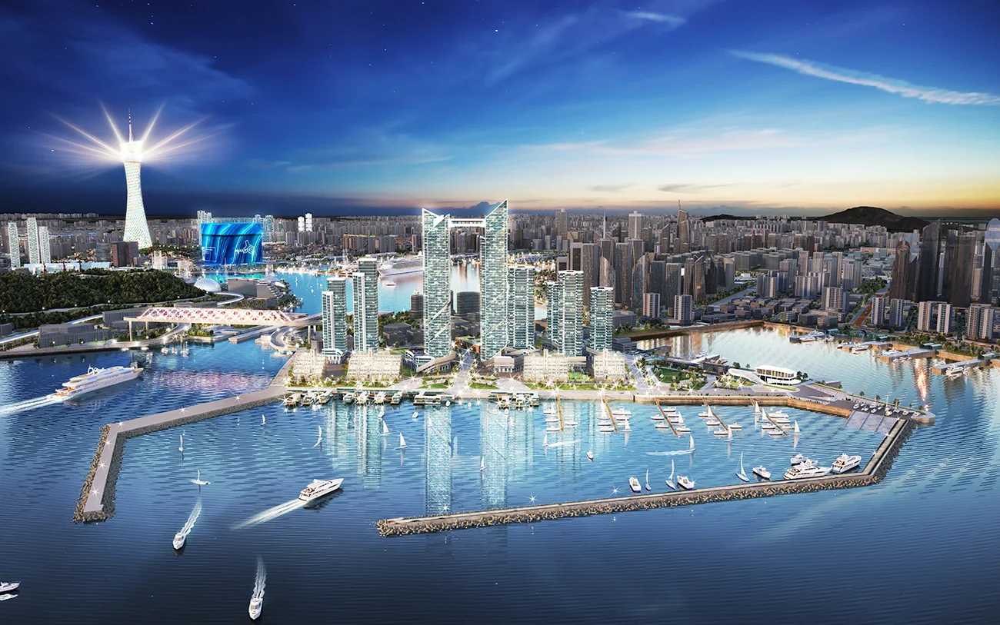
6. 인천 제물포 르네상스 개발 인천 방위 사령부 부분 조감도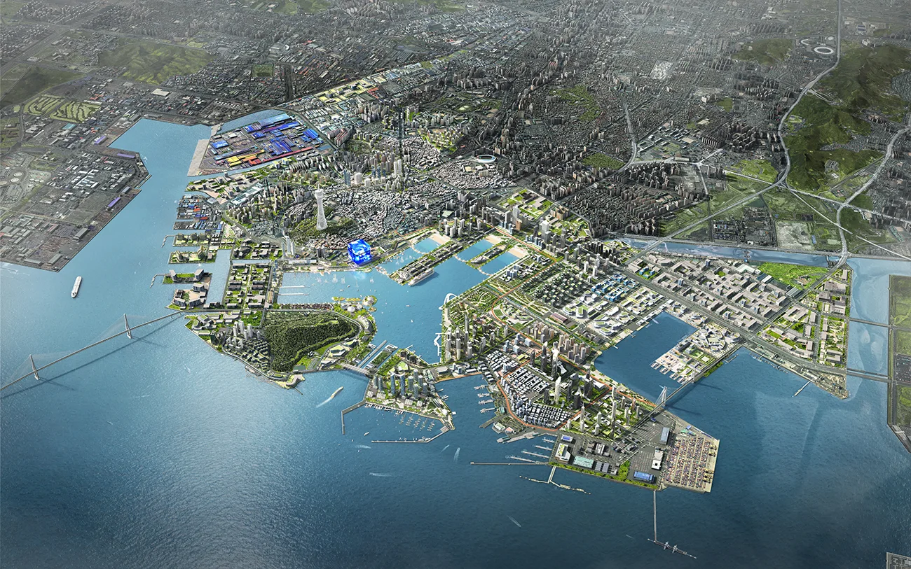
7. 인천 제물포 르네상스 개발 전체 광역도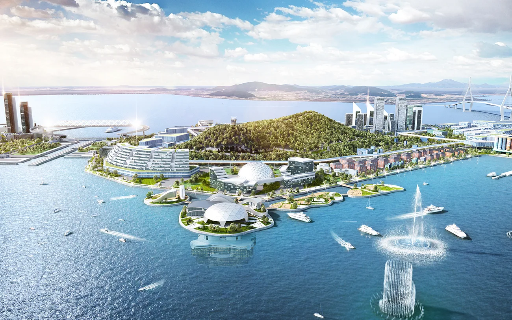
8. 인천 제물포 르네상스 개발 월미도 부분 조감도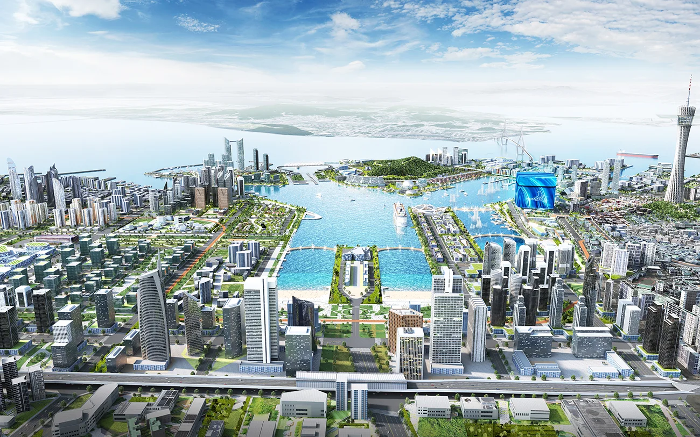
9. 인천 제물포 르네상스 개발 제물포 전체 조망 조감도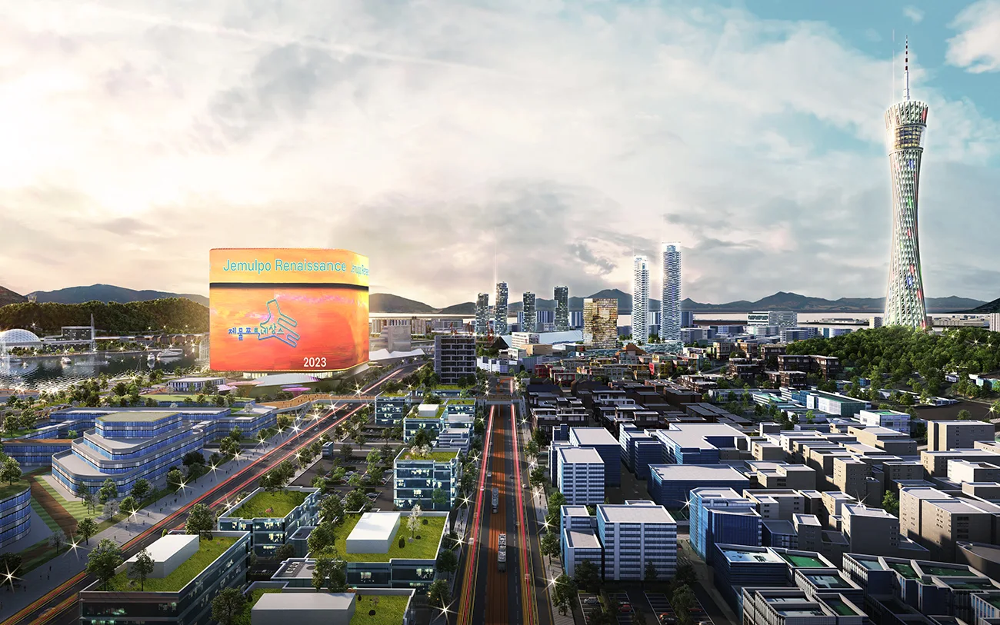
10. 인천 제물포 르네상스 개발 테마거리 부분 조감도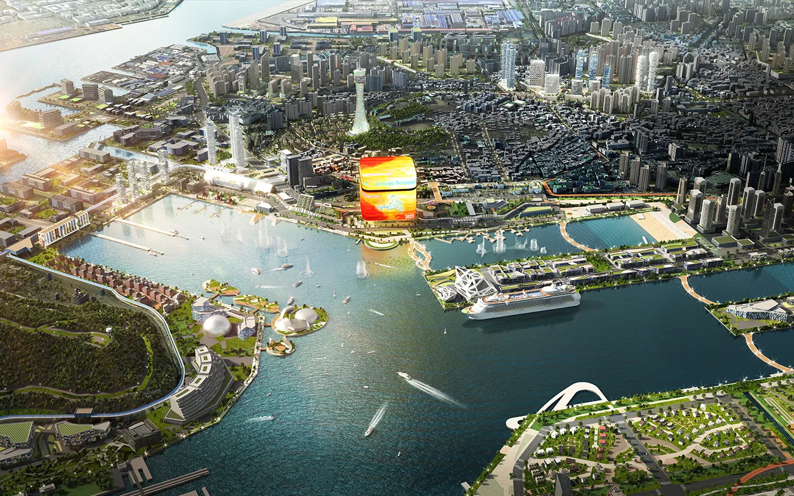
11. 인천 제물포 부두 전체 조망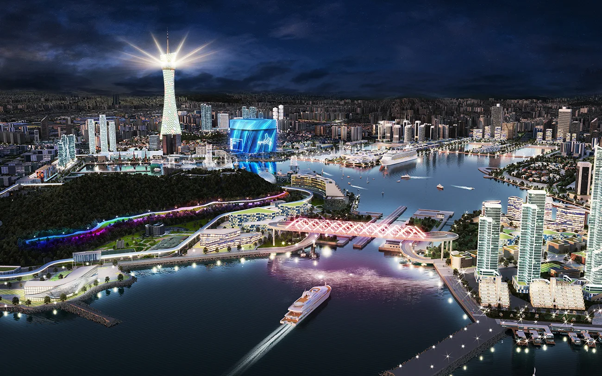
12. 갑문 내항 야간 조감도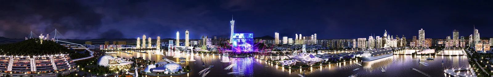
제물포항 중앙부에서 바라본 제물포항 전체 모습 파노라마 이미지작업과정
인천 제물포 전체에 대한 모델링 및 조감도 제작 그리고 영상 제작용 모델링 납품까지 함께 진행한 프로젝트입니다.